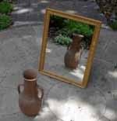

Osservo i miei occhi nello specchio del bagno, essi mi osservano a loro volta. Immagino che non pensino a niente. Molto spesso osservo il mondo e mi accorgo di avere gli occhi dello specchio, vuoti e alla ricerca di un senso. Allora mi immagino che chi non pensa a niente forse riesce a cogliere meglio queste sottili intuizioni. Addirittura a volte, penso che lo specchio del bagno sia più intelligente di me.